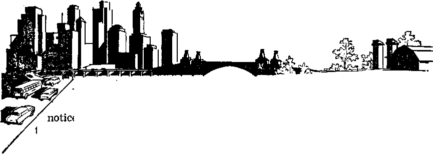

THE NEWS BEHIND THE NEWS
Progress in Treating Mental Ills
j 1 ib pi ’< : p ; ■ ■■ ■ >. ■ ■ • ■ : \ - p : i ■ ■■.; p h " J h ■ ; m 'c
The Explosive Farm Issue
V', t = i hpp'.p p>-■■ ■ ■ : PiT.-p pppjnc.'
Marking 1914 as One of History’s Milestones
THE MISSION OF THIS JOURNAL
News sources that are able to keep you awake to the vital issues of our times must be unfettered by censorship and selfish interests. "Awake 1” has no fetters. It recognizes facts, faces facts, is free to publish facts. It is not bound by political ambitions or obligations; it is unhampered by advertisers whose toes must not be trodden on; it is unprejudiced by traditional creeds. This journal keeps itself free that it may speak freely to you. But it does not abuse its freedom. It maintains integrity to truth.
“Awake I” uses the regular news channels, but is not dependent on them. Its own correspondents are on all continents, in scores of nations. From ihg four comers of the earth their uncensored, on-the--scenes reports come to you through these columns. This journal's viewpoint is not narrow, but is international. It is read in many nations, in many languages, by persons of all ages. Through its pages many fields of knowledge pass in review—government, commerce, religion, history, geography, science, social conditions, natural wonders—why, its cover* age is as broad as the earth and. as high as the heavens.
“Awake 1” pledges itself to righteous principles, to exposing hidden foes and subtle dangers, to championing freedom for all, to comforting mourners and strengthening those disheartened by the failures of a delinquent world, reflecting sure hope for the establishment of a righteous New World.
Get acquainted with “Awake!” Keep awake by reading “Awake!”
Poblishsd Semimonthly By WATCHTOWER BIBLE AND TRACT SOCIETY, INC.
117 Adams Street
N. H. Knobs, J’fwrifnt
Printing this issue: 1,579,000
LiHnsn in wfcieh thk magulnt ii PQMhhM: Semimonthly—Afrikaans, Ejijlfoh. Ft finish, French German, HoUantiab. Italia,n , Japanue, ,
SDanteh, Swedt rt.
Monthly—DuUb. Greek- Fortucuw, Ukrainian.
ODcn Yearly mtacription rata
A0«r|*t, U.S., 117 Adama St.d Brooklyn 1, N.Y. fl Antral I a, H Berwf&rt Rd , strathfirid, N.S-W. »/• CuiUla. 40 InrlD Are,, Toronto 5, Ontario fl EPflutd, 34 Crareu Terrace. London, W* 2 7/-
N«w 2«a1uls (1P.0. Boi 3o, WeHingim, C. 1 ?/• Sovtft Afriaa, Rfalt Bm. ElandsfonteiUj Tri. ?/-
Bolar mJ a* aecond-rian mattir at Brooklyn.
Brooklyn 1, N- T., IL & A.
Gbanf Suiter, Secretary
Five cents a copy
flaradtatiMi riiruiM tie Io office in your couji-try In rnmplfance with regulations to suarantpp safe delivery of money. Remittances arc accepted at Brooklyn from countries whera no office Is [ocatrd, by International money order only. Sutaeription In different countries are here stated in local currency. Notfea of raRlrathn fvltb renewal blank1 is sent, at least Uto Issues before sutucrlpUcni expire?. Chante of addri& »bw seat to our offi" may he expected effective within one Bonlb. Senrl your old as well as new address.
N.Y., Act jj( Mirth 3, M?0. Printed in U.S.A.
CONTENTS
Marking 1914 as One of History’s Milestones 3
Minerals as Important as Vitamins?
‘Favorable Testimony from Outside’
Progress in Treating Mental Ills
“Four Word Is Truth"
The Scapular Scorched by God’s Word 24
Jehovah’s Witnesses Preach in All the Earth—Taiwan (Formosa)
NO ONE
, not even the skeptics, will deny that there has been a change in the world since A.D. 1914. In fact, recorded history points to that year as the turning point of our time, as the following quota* tions show;
“It has long been apparent that August 4, 1914, was one of history’s milestones. Forty years is a short enough span as history is reckoned, but the events those years have thrown up—two world wars, the coming of the Welfare State, the production of atom and hydrogen bombs, to mention only a few—clothe the era of 1914 with strange and misty garments.” (The Listener, July 29, 1954, published by the British Broadcasting Corporation) “Summer of 1914 closed an age when the world was full of friends. It was the last of the years of tranquillity though no one, of course, knew it. A golden age in which the world, in general, had been at peace and minding its own business was rapidly drawing to a close in that summer of 1914, Just forty years ago." (Capper’s Weekly, July 27, 1954) The Augusta Herald, September 4, 1954, under the caption “When the Lights Went Out in 1914” declared: “Today, forty years after 1914, we are confronted with one unalterable fact, there will not be a world peace if we avoid war; violent contentions will continue. Children will be born into manhood and die old men without the experience of peace such as was known before 1914, Our hearts are full of fear and anxiety of what the future may hold for us.”
The Times-Herald, Washington, D.C., March 13, 1949, quoted priest Robert I. Gannon, S. J., ex-president of Fordham University, as saying in a speech made at the New York Herald Tribune Forum for High Schools: “You were born into chaos.” “The last completely ‘normal’ year in history was 1913, the year before World War I began,” the editorial commented. That is why anybody born after 1914 has no personal recollection of anything but ‘ “abnormal,” upset, excited, nervous times—though a lot of younger people have doubtless heard plenty from their elders about the good old days before the wars.’
Associate professor of history at Columbia University’s Barnard College, Rene Albrecht-Carrie, also pointed to 1914, saying: “It is indeed the year 1914 rather than that of Hiroshima which marks the turning point in our time, for by now we can see that; whatever the future may hold in store, it was the first world war that ushered in the era of confused transition in the midst of which we are floundering." (The Scientific Monthly, July, 1951) And H. R.
Trevor-Roper, don at Oxford, confirms the above with these words: “Nevertheless the first war marked a far greater change in history [than the second world war]. It closed a long era of general peace and began a new age of violence in which the second war is simply an episode. Since 1914 the world has had a new character: a character of international anarchy.”—The New York Times Magazine, August 1, 1954, page 9.
The Bremerton Sun, published at Bremerton, Washington, stated on its editorial page for July 30,1954, under the subheading “It All Began 40 Years Ago”: “The first world war, and with it the beginning of most of our present international troubles, broke out 40 years ago [1914] ” And from the opposite side of the United States, the Boston Sunday Globe for April 12, 1953, reports: “Crises make headlines, but continuity is not news. News is a break in continuity, but we can no more live on interruptions to the normal flow of life than we can eat an absence of food. Since 1914 we have had so many crises that our nerves are benumbed, and were these crises as decisive as we are given to suppose, we would by now all have starved or frozen to death. . , . Crisis is a thundersquall, a cyclone, a blizzard, an earthquake, a flood, a fire, a volcanic eruption, a revolution, a war, a pestilence. It may be objected that the foregoing catalogue of crises reads uncommonly like a continuity of our experience since 1914, but had it heen, we would now be extinct.” There were a few days of respite, but none worth mentioning, for all the world since 1914. David Lilienthal, onetime boss of the Atomic Energy Commission, speaking at Western Reserve University, decried "Scaremongering, but conceded that “any person who wants to live a peaceful, quiet, uneventful life has just picked the wrong time to live,”
“Ours is a time when events course by so madly that few stand their ground stubbornly against the sea of troubles,” writes news commentator George E. Sokolsky. “We seem to leap from incident to incident. Suddenly there is a new emergency and men die. Since 1914, great empires have collapsed and nations hardly known then are now world problems.... Our problem is today, as it has been since 1914, to discover a formula for saving our civilization. We have tried war, appeasement, charity, diplomacy, the League of Nations, the United Nations. These efforts have failed. The proof of their failure is that we are still at war. True, the battles for the moment have been localized, but the preparations are for a general war.” “Obviously, something happened between the years 1914 and 1950 which altered the course of Western civilization and of American history and life. That alteration has not been for the better. It has brought us, to date, three general wars and an economic dislocation of great depth. Its social consequences are just beginning to appear in the changed character of our family life." Reminiscing, at another time he recalled an acquaintance’ saying that “the world was fairly comfortable until we all went to war in 1914.” After that it got all mixed up.
Another news correspondent, Edgar Ansel Mowrer, a Pulitzer Prize winner, joins in marking 1914 as a milestone in history. He writes: “But with the carnage of World War I, the subsequent revolutions and famines, the world-wide economic depression, the march of Fascism and Nazism, and the holocaust of World War n, that secure environment [known prior to 1914] receded further and further into a virtually incredible past. Since 1914 there has been no lack'of excitement to complain of. Indeed there has been so much that at times the unending crises, the bloodshed, the tensions have made me reverse my boyhood longings and caused me almost to pine in-
stead for the stable, neat world of Jane Austen.”—Saturday Review of Literature, December 22,1951.
There is no doubt that ours is a different world materially and spiritually from that before 1914. “Probably no period in the world’s history has seen so great and significant changes in so short a time. They have affected our preaching, our churches, our denominational life, and our doctrinal emphases. It is a different age.” (The Watchman-Examiner, April 19, 1951) What has brought about these catastrophic changes? Why are we so confused? What is the true significance of 1914 and why cannot this world ever be the same? What is the meaning behind the news, the rise in crime, violence and delinquency, the decline of morals, the quest for peace and the preparations for war? What is the news behind the news? Let history and the Word of God answer for us in the following article.
.........
NEWS.
Forecasting world events today is haiardous bus Ines even when based upon sober analysis of power politics global strategy and the present and prospective balances of forces. Nevertheless, events can be foreseen and world happenings understood.
VENTS now taking place in the world are of such magnitude that all major nations are forced to alter their views almost from day to day. In fact, so baffling has been the course of the world in recent years that news analysts and commentators shy away from unearthing the news behind the news. Columnist George E. Sokolsky writes: “We seem to leap from incident to incident. Suddenly there is a new emergency and men die. Since 1914, great empires have collapsed and nations hardly known then are now world problems. . . . Our problem is today, as it has been since 1914, to discover a formula for saving our civilization. We have tried war, appeasement, charity, diplomacy, the League of Nations, the United Nations, These efforts have failed.”1 “Obviously,” he says, “something happened between the years 1914 and 1950 which altered the course of Western civilization,” history and life.
But what has happened to
the world since 1914 none among world leaders seem to know. The celebrated philosopher and adviser to presidents, Bertrand Russell, declared: “Ever since 1914, everybody conscious of trends in the world has been deeply troubled by what has seemed like a fated and predetermined march toward ever greater disaster. Many serious people have come to feel that nothing can be done to avert the plunge toward ruin. They see the human race, like the hero of a Greek tragedy, driven on by angry gods and no longer the master of fate.”2 Modern man, of course, rejects the ancient superstitions. A more practical and palatable alternative is concocted to explain the peculiar behavior of the world since 1914, one more in line with modem thinking. So current world events are variously interpreted as “a quest for power,” “a struggle for world domination,” "a search for peace,”s for freedom, for land and food. As sound as these explanations may appear, yet they do not fully satisfy the more inquisitive thinker who desires to know why world woes have accumulated upon this generation in doses never matched in all history. To quench this desire necessitates venturing behind the news with spiritual insight. It is impossible to understand it otherwise.
Studying world events without the lens of a spiritual eye is like trying to study the universe without a high-powered telescope, or microscopic life without a microscope. Without these aids distant objects remain vague, indistinct, without definition, and even the closest and most familiar things are not seen in minute detail. With instrumental help distant parts of the universe are brought clearly into focus, their definitions are clear, their enlargements are magnificent, and our conclusions are scientific and accurate. The means of sharper discernment for the spiritual-minded man is God’s Word the Bible. With its help the spiritual man can accurately evaluate world happenings.—1 Corinthians 2:11-16.
The Significance of Our Times
More than 2,000 years ago the Bible peered into our day and revealed that with the coming of 1914 (A.D.) the “times of the nations” (the Gentile times), spoken of by Jesus, a period of 2,520 years, which had their beginning 607 B.C., would come to a close; at this time the nations would be angry and woe would come to our earth. This is precisely what followed. The significant factor behind the news since 1914 is that a kingdom government was born in the heavens, that the great adversary of God was thrust 3 out of heaven and confined to the vicinity of our earth, that humanity has entered upon a judgment period, which soon now will culminate in the destruction of all wickedness in “the war of the great day of God the Almighty”—Armageddon.—Luke 21:24; Revelation 12:12; 16:13-16, New World Trans.
Intelligent, thinking men of the first century associated the consummation of this system of things with' the coming of Jesus Christ into his kingdom. So they inquired of him when this would be. Jesus, with prophetic foresight, indicated that this would not come about until after a great lapse of time—“until the appointed times of the nations are fulfilled”—after which nation would rise against nation in world war; there would be food shortages, anguish of nations, earthquakes in one place after another; that “all these things are a beginning of pangs of distress” on the earth, and that the generation that witnessed all these things would also live to see the consummation of the wicked system of things at Armageddon, followed by the will of God being done on earth as it is done in heaven. The disciples of Jesus wrote further about this eventful generation, stating that it would be marked with an increased crop of ridiculers, also with a flourishing harvest of ultrarich and a moral breakdown. Bible chronology sets 1914 A.D. as the year when these events were due to start. The events since 1914 have been irresistible and stand irrefutably in support of prophecy.—Luke 21:7-28; Matthew 24: 3-13; James5:l-6; 2Peter3:3,4; 2 Timothy 3:1-5. New World Trans.
Proof that the physical-minded man is blind as to what lies ahead
was evidenced in his predictions and
AWAKE!
“golden dreams” of what was to follow war years. Democracy was to be safe, freedoms were to reign, there was to be plenty for all. Said Sir Winston Churchill: “It was my dream during the war years that after the war Russia, whatever her ideology, . . . would help to bring about the Golden Age on which all our hearts are set, which would be possible but for the follies of men.”3 But by his peering through the prophetic eye of the Bible, the spiritual-minded man was not overcome by wishful thinking, golden dreams or rosy political prognostications. The Bible brought clearly to view that “woe” was in store “for the earth and for the sea [restless humanity], because the Devil has come down to you, having great anger, knowing he has a short period of time.” As far back as 1877 students of the Scriptures could see these woeful conditions coming!—Revelation 12:12, New World Trans.
Thirty-four years before the Gentile times came to an end A.D. 1914, The Watchtower published this fact, giving Scriptural proof? Worldly men, however, could not see these truths until late 1914, over thirty years later, and even then did not recognize their significance. Winston Churchill admitted that “there never was a war in history easier to prevent,” that it could have been prevented without firing “a single shot.” But, he says, “no one would listen and one by one we were all sucked into the awful whirlpool."5 Nation rose against nation, kingdom against kingdom, exactly on time and in the way the Bible foretold.—Matthew 24:7,
Not only the beginning of hostilities were predicted, but also their sudden halt in 1918. Edwin Leland James, former editor of the New York Times, wrote: “In a twinkling, four years of killing and massa-
1. The Watchtower, March, June and July issues of 1880. 5. The New York Times, March 6, 1946, ere stopped as if God had swept His omfiip-otent finger across the scene of world carnage and had cried, ‘Enough.* Had World War I led into the battle of Armageddon, no flesh would have been saved. All humankind would have perished off the earth. So that some flesh might be saved through Armageddon’s battle, it was not dated to follow World War I. This fact only the spiritual-minded can appreciate.—Matthew 24:22, 14; Revelation 7:1-3, New World Trans.; Ezekiel 33:7-9.
Behind the Food Shortages, Earthquakes
While natural-minded rulers proclaimed plenty and prosperity for the postwar world, the Bible foretold “food shortages and earthquakes in one place after another.” What do the facts since 1914 show? Dr. Josue de Castro, Brazilian expert on human geography and nutrition, recently declared: “Of the two and a quarter billion people on earth, . . . two thirds live in a permanent state of hunger. A billion and a half human beings cannot find the means of escaping this most terrible affliction of society.”4 Another authority states that “there are now more people hunting desperately for food than at any other time in history.”5 6 Here again, the Bible’s foresight stands vindicated.
Even as to such unpredictable phenomena as earthquakes, the Bible prophecy is scientifically accurate. Since World War I scientists have observed a strange change in the behavior of earthquakes. Scientists say: “Major quakes used to occur in clusters, each period of activity being followed by a rest period.. .. But the periods of activity became progressively shorter and closer together. Since 1948 the pattern has entered a new phase, with approximately one great quake a year.”7
Accepting Jesus’ words with faith, the spiritual-minded man is at an advantage. He is not left to speculate about the meaning behind world famine or the acceleration of earthquakes in this generation; he can modestly, humbly and truthfully say he knows. The Bible, like a powerful microscope, has revealed their hidden meaning, showing them to be a part of the one grand composite sign marking the end of the Gentile times, and to be evidence of the setting up of the kingdom of God and the nearness of Armageddon, and to be a positive indication of the incoming new world, where righteousness is to dwell.—Matthew 24:3, 7.
Behind Corruption and Delinquency
Looking back over the years since 1914, we see that it is quite obvious that something has happened to morals. In 1951 news reports of corruption were so frequent that it ceased to be news. Senator Fulbright scored Washington as having a "double standard of morality.”8 “Influence peddling and favoritism,” “falsification of records,” “organized crime in interstate commerce,” “blackmail, browbeating and homosexuality in government,”8 were only a few of a long list of charges of corruption in high places. In 1952 there was much more of the same.
For examples: Mayor O’Dwyer’s friend and protege, James Moran, was imprisoned for masterminding a $500,000-a-year extortion plot during O’Dwyer’s term as mayor of New York city;8 corrupt elements in business communities blackmailed government officials; lobbyists for big concerns influenced legislators; the newspapers refused to print that which might reduce their advertising; the churches favored big subscribers and shied away from preaching God’s truth to them; personal standards became corrupted, so much so that it is common practice today to grab everything that can be gotten away with.
While adults ponder the moral collapse among their age group, an ugly, menacing world problem has arisen from among the juveniles. Variously, experts endeavor to interpret the causes, but no formula is agreed upon. Judge Camille Kelley of Memphis, Tennessee, charged "separated and divorced parents”9 10 with the rise In crime and juvenile delinquency. Bertram Beck of the Federal Children’s Bureau noted a “positive correlation between the rate of delinquency and war and cold war.”9 Roman Catholic Bishop Sheil told Senate investigators that lack of religious training is behind the plague. Children, he said, are “so lacking in religious training that two-thirds of fifty thousand school children checked in New York city never heard of the Ten Commandments.”1*
The Bible lists the moral breakdown as a sign of “the last days” of this wicked system of things. Note the apostle’s words: “But know this, that in the last days critical times hard to deal with will be here. For men will be lovers of themselves, lovers of money, self-assuming, haughty, blasphemers, disobedient to parents, without gratitude, with no loving-kindness, having no natural affection, not open to any agreement, slanderers, without self-control, fierce, without love of goodness, betrayers, headstrong, puffed up with self-esteem, lovers of pleasures rather than Ipvers of God, having a form of godly devotion but proving false to its power.” The apostle advises: “From these turn away.”—2 Timothy 3:1-7, New World Trans,
The News Behind the Peace Talks
World conditions, however, appear to be improving. There is a big boom in peace
11. The New York Times Magazine, May 29, 1955. 12. United Press Dispatch, July 15, 1955. talk, but real peace is not in sight. Big shooting wars are becoming unpopular. Nobody, not even the Communists, appears to want new wars. The maneuvers behind the peace talks are viewed with suspicion. Premier Pibui Songgram of Thailand said: “Before the first world war, we talked about peace; before the second world war, we talked; and now, perhaps before the third, we talk peace and the countries prepare for war,” A third world war, he added, “is inevitable.”11 Scientist Dr. J. Robert Oppenheimer also spoke of this inevitability when he compared communism and capitalism to “two scorpions in a bottle, each capable of killing the other, but only at the risk of his own life.” “The basic fact is,” said Oppenheimer, “that the time in which this may happen is short.”12
Notwithstanding the irresistible composite sign before them, what worldly men fall to see with their natural eye is the rapid approach of Armageddon. But Peter tells us that “according to their wish, this fact escapes their notice.” Jesus said: “Blind guides is what they are. If, then, a blind man guides a blind man, both will fall into a pit.” The pit ahead is the battle of Armageddon, which is no fight between nations of this world, but is Jehovah’s battle, fought against Satan and his demonic organization, visible and invisible. Using the Bible to peer into the future we can, with accuracy, foresee what is to come. Paul warns us: “Whenever it is that they are saying, ‘Peace and security!’ then sudden destruction is to be instantly upon them just as the pang of distress upon a pregnant woman, and they will by no means escape.” This prediction is as sure of fulfillment as all the others.—2 Peter 3:5-13; Matthew 15:14; 1 Thessalonians 5:3, New World Trans.
This Concrete Hge
VISITORS to the Leeds City Hall, England, may
the name of Joseph Aspdin. It is a reminder that 130 years ago he patented his “Portland cement,” an event that was to make the twentieth century the “Concrete Age.”
For years men had been searching for a building cement that would harden under water. Probably the first man to tackle the problem was John Smeaton, famed as the builder of the Eddystone lighthouse. He conducted a series of experiments with various types of clay and stone during its construction in the year 1756, Others followed him. In 1796 a man named Parker produced what he called “Roman cement,” while Vicat in 1813 and Frost in 1822 made further contributions to its development. What proved to be the forerunner of modem cement was discovered by Aspdin in 1824.
Today’s product is made from materials rich in silica and lime, such as clay and limestone. These two, ground and mixed
together in specific proportions, are fed into a kiln and burned. The resulting clinker is pulverized and about 3 percent of gypsum is added to modify the rate of setting.
The ingredients may be adjusted to produce a variety of cements for different purposes. Addition of alumina, for instance, hastens setting, and although this type of cement generates great heat during this period, this is no disadvantage when it is used in the building of harbors and other underwater projects. It is also put to good use in wintertime during freezing conditions. In contrast are the slow-setting cements with relatively low heating. First employed in the construction of the mighty Hoover Dam, they are required for massive structures in which there is difficulty in dispelling the heat, and where failure to do so would result in cracks’ appearing.
In the early days cement making was a slow business, but, with the introduction of mass-production methods, each stage of manufacture no,w follows upon the other without interruption. Even the critical period of burning is a continuous process as the crushed raw materials are fed into the top of the kiln and emerge as clinker from the bottom.
Cement is best known the world over as the essential component of concrete, that versatile man-made stone. The earlier uses of concrete were limited, however, due to its inability to bear tensile stresses, until the introduction of mild steel reinforcing about the year 1868, The credit for the discovery of the latter is popularly accorded to a French gardener by the name of Joseph Monier, who, desiring to strengthen some concrete water basins he was making, did so by the insertion of iron rods. From then on, concrete underwent continual improvement, opening up vast new fields in its application.
The next development was prestressing, a technique based on the fact that concrete is ten times stronger in compression than in tension. The problem was to retain a straight concrete beam in a state of compression when forces were trying to tear it apart This was solved theoretically in 1928 by M. Freyssinet, a French engineer; but its practical application had to await his invention of a special wire-tensioning jack in the year 1939. His idea was to stretch high-tensile steel wires through holes passing down the center of the precast beam, anchoring the wires at the ends. In the effort to return to their original length, the wires maintained the necessary compression. The holes were finally filled with liquid cement which, when set, firmly secured the wires at every point of their length. By this means concrete was capable of carrying far higher loads and greater spans were achieved.
Claim for the largest single span of prestressed concrete is made for a bridge 140 feet long over the River Don at Conis-borough, England.
Focusing our attention now upon the building industry, we find that concrete has made for remarkable progress in methods and practices. Many of the holdups due to bad weather and lack of space on the building site are being eliminated by the factory prefabrication of concrete building units. The units, often complete with doors and windows, are delivered from factory to site as they are required.
A recent achievement in this method is the erection, four months ahead of schedule, of a number of blocks of eleven-story-high apartments at Wandsworth, London, Precast units included walls, partitions, balconies and stairways.
The shell roof is yet another interesting architectural development. Designed on the principle of the sea shell, this one-piece
roof ewes its great strength and rigidity, in spite of its comparative thinness, to the steel reinforcing and its curvilinear shape. Apart from valuable saving in materials, the shell roof provides a covering for large areas free of supporting columns, an important feature in the design of auditoriums, theaters and similar buildings.
As a protective finish, concrete has proved to be invaluable. Steel work of bridges when encased in concrete is safe from attack by corrosion, and the initial expense is more than offset by low maintenance costs. Its protective qualities are further emphasized in cases of fire. The steel framework of buildings likewise enclosed invariably remains intact when unprotected girders have bent and buckled into a twisted mass because of the intense heat.
It would be impossible to give a clear picture of the modem application of concrete without mentioning roadways. The latest methods of road-laying are almost revolutionary, to compare with prewar practice. A team of about twelve men and a machine can now equal the effort of two hundred men previously working by hand. Where the nature of the soil permits, even metaling (a carefully laid but costly stone foundation) is being replaced by a process of soil stabilization. The soil forming the bed of the road is lifted by machinery, mixed with cement and pounded back into place by mobile rams, providing a solid base for the road surface above.
Whether the need is for fencing posts, street lamp standards, sewer pipes, power pylons, or what may be the most unique t project of our concrete age, a 750-foot-high ' towerlike TV aerial mast with a restaurant at the 500-foot level in Stuttgart, Germany, concrete fills the role.
While credit must go to the men whose toil and ingenuity gave us cement and concrete, the Bible reminds us that ‘there is nothing new under the sun.’ Geologists will tell us that in a process known geologically as “cementation,” alligo-calcareous elements have united to form certain types of natural rocks.
Thus the very chemical changes produced artificially by man have been at work for centuries in nature, and the results stand as a silent monument of praise to their Creator.—Contributed from Dublin, Eire.
Mnerals as Important as 'Vitamins?
■j? According to Dr. Russell Couch, professor of poultry husbandry biochemistry and nutrition at the Texas Agricultural and Mechanical College, far more attention has been paid to vitamins than to minerals in animal and human nutrition than the facts warrant. When distillers’ dried solubles (yeast) were added to the diet of chicks their rate of growth was increased thirty-two percent. It was also found that adding the various minerals contained in these solubles individually produced no results; it was the mixture, a balanced combination, that stimulated growth. The report, published in the New York Times, November 20, 1955, goes on to say: “Dr. Couch believes that this finding will have a profound effect on the thinking of nutritionists. It looks as if the proper combinations of minerals may be as important as vitamins in the development of both animals and human beings. Dr. Couch suggests that it is time to begin a field study to determine what mineral mixtures should be added to soils, especially those which have been partly washed away, to produce crops of maximum nutritive value.” It might be observed that this is the very basis of that type of husbandry known as “organic farming.”
FAVOURABLE TESTIMONY FROM OUTSIDE
DN SPITE of the unpopularity of the beliefs of Jehovah’s witnesses, their conduct, such as was noted in connection with the 1955 "Triumphant Kingdom” assemblies, did elicit "a favorable testimony from people on the outside,” even as the apostle Paul said should be the case with mature Christians.—1 Timothy 3:7, New World Trans,
V Thus two columnists writing in the New York Daily News, July 21, 1955, stated: "It was a goodly crowd—of good people, merchants and others who met the witnesses agreed. The shop owners in the area around the stadium were greatly impressed by the quiet, sober and cheerful behavior of the visitors?* Among other things they quoted the owner of an eating place opposite the stadium aa saying: "You know, a guy had something to eat here, and he went out. An hour later he came back, and said, 1 forgot to pay for my meal.* Can you imagine That?”
The New York World-Telegram and Sun, July 20, 1955, told of New York City health department officials lecturing “100 or more volunteer cooks, KP’s and food servers already assembled for the convention [at Yankee Stadium]. While the volunteers listened carefully, it was Ln a sense like telling birds how to fly.”
En route to Europe a crew member of one of the chartered ships said to one of the witnesses: "You are the most exceptional group we have ever had. Why, you make us feel as though we were the passengers and you the crew J” And said a Pan American Airways captain at the end of the flight: "This has been the happiest group we have had in a long time.*’ / The London Reynolds News, July 31, 1955, described the witnesses as "perfectly organized and co-operative.” “Predominantly young, cheerful, smiling, yet quiet and orderly.” “Self-disciplined.” It quoted a British Admiralty director of victualing as saying: "The foundation of your success is clearly an abundance of willing workers, ably directed.”
The Stadt Nurnberg, in its August 11,1955, morning edition had, among other things, the following to say: “From the smallest infant in arms—most witnesses attend an assembly with their entire families—to the old grandmothers, all ages are represented. One even sees the sick in their wheelchairs, and how eagerly they drink in the words of the speak* ers! Especially worthy of mention is the exemplary order and cleanliness of these people. In the eating stands there are no scraps of food lying around, no empty bottles, and no paper.”
And in its evening edition of the same day this paper further observed: “One is struck with the fact that not a one smokes.” "The witnesses contribute voluntarily to support their organization, no pressure is used. Scattered throughout the grounds are Inconspicuous contribution boxes. The call for volunteer workers was not ignored, as can be seen by the fact that 149,000 man hours were spent in making the grounds ready for the assembly.”
An official in behalf of a line that had transported many witnesses abroad wrote the Watch Tower Society: "I would be doing less than my duty if I did not tell you that your passengers were the best we have ever had to handle. They were the most co-operative, and also appreciative, and I and my staff are very sincere when we say that we would rather handle Watch Tower passengers than any others,”
The two Dutch papers De Telegraaf and Nieuws van de Dag described the returning witnesses of Jehovah as “the most accommodating air passengers in the world,” because although repeatedly having "had to wait many hours” at the Amsterdam airport, "not a complaint passed from any of their lips.”
What an amazing organ is the human ear! The loudest sounds it can hear without pain are approximately ten trillion times more intense than the softest. No wonder that such a delicate mechanism is frequently Impaired! Learn to care for it. "The hearing ear, and the seeing eye, Jehovah hath made even both of them.” —Proverbs 20:12, Am. Stan. Ver.
ISSUE
'HE United States farmer is growing
LU
very unhappy. His cash is not going so far as it used to. Net farm income is down to $11 billion, a drop of 30 percent from the Korean war peak of $15.8 billion and the lowest level since 1942. This represents an annual drop in income of about 54.7 billion under the 1952 level. While prices received by the farmers for their products have fallen 21 percent since the Korean war, the cost of what they buy has declined less than 3 percent, and. in some cases prices have actually gone up. The farmer, then, is faced with the problem of having to pay more for the things he buys, while getting less for the things he sells.
For example: Between the years 1947 and 1949 a farmer bought a combine at market value with about 2,000 bushels of wheat, to compare with 2,600 bushels now. In 1948 he could purchase a tractor with the proceeds from 37 hogs. It takes at least 138 hogs at today’s prices. It requires 55 gallons of milk to pay for a standard automobile tire, where it used to take about 40 gallons. What 70 pounds of chicken used to buy, now it takes over 200 pounds to buy. Almost every product that the farmer sells, brings him less in return in the form of things he buys. One farm survey reveals that a farmer gets “about 30 cents an hour for his labor.” How, then, can he be expected to buy goods manufactured with a minimum wage at $1 and more an hour? A farmer can raise a hog for about $12 a hundredweight. The market price is about $12.75. The $12 covers the cost of feed and leaves nothing for labor
1948
TODAY
and investment.
What is happening to the farmer is the same as if a factory worker, who had been receiving over $100 a week in wages in 1952, had been suddenly cut to $90 a week in 1953, $85 in 1954, and then to $80 a
week in 1955, in the face of the rising cost of living. This sort of thing can cause no end of unhappiness, worry and concern, as it has among farmers, It has forced them to live up their reserve, caused some to go into debt and others to give up farming altogether and go into industry.
Behind the Farm Squeeze
The cause of the price-cost squeeze is a relatively simple one; the remedy, however, is still as elusive as ever. What has been happening, experts say, “is a painful but not yet critical adjustment from a decade in which a voracious, war-stimulated world appetite demanded all the food that the U.S. could produce at whatever price the buyer had to pay.” Back in 1942 the United States inaugurat-tion of food to fill the wartime demand. The government guaranteed to support farm prices at 90 percent parity.
ed a program to encourage maximum produc-
Parity is explained as “the price that a farmer needs to get for a crop in order to ■ give him the same purchasing power he had back in a base period,... which often is taken as the pre-World War I period of 1910-1914.” Ninety percent parity was the point at which the* government fixed the price-support level for certain farm products. By direct buying or price-support loans, the government took steps to keep prices of these commodities from dropping below that level. What the farmer could not sell, the government would purchase and store. It bought and stored prodigious quantities of surplus grains, butter, cheese and other products. That is how the United States government went into the storage business.
But, with the close of the Korean campaign, the war demand for food dropped abruptly, domestic and export markets were cut sharply, yet the rigid price supports were still enforced. This merely stimulated a greater production growth for profit. The result is obvious. The farmer kept producing much more than the domestic and foreign markets could absorb. The mass food surpluses that did not return a reasonable profit to the producer through normal channels of trade were bought by the government. The total value of surplus stock on hand now stands at more than $7.5 billion, and it is rising fast. The storage bill alone of this surplus glut is more than $700,000 a day, a half-billion dollars a year.
In warehouses and storage bins around the country the government owns outright or on loan 913,000,000 bushels (a year’s crop) of wheat, 657,703,000 bushels of corn, 6,327,000 bales (a year’s supply) of cotton, 810,000,000 pounds of cottonseed oil, 110,000,000 pounds of wool and enormous stocks of such surpluses as barley, beans, winter cover crops, olive oil, linseed oil, tung-nut Oil and whey.
To get rid of the surplus is the solution; but how to do it is the problem. Despite all encouragement to grow less and other restrictions enforced on the farmers today, there is still more food produced than the domestic market can consume. And each year the export market gets leaner and leaner.
The Government’s Flexible Program
What has the government done to liquidate surpluses and stabilize farm prices? The 90 percent parity program, which encouraged production during the war years, was dropped and flexible supports were made a policy under the Eisenhower administration. This meant that supports would be increased if total supplies of a supported crop were reduced; supports would be decreased if these supplies continued to grow. When supplies of a crop were large the lowered supports were expected to persuade the farmer to cut his production. When the supplies became reduced, the increased price supports were expected to encourage more production. In addition, to be eligible for supports on such basic commodities as wheat, com or cotton, a farmer must agree to plant only as many acres of these crops as he is allotted.
While the program appeared sound in principle, it failed in practice. By adding fertilizer or planting closer rows farmers increased their per-acre yields until their total crops were about as large as before. Because the flexible program failed to halt the overproduction, which was its primary purpose, the farmers strongly urge that the whole plan be scrapped. But they offer no substitute program, nor do they have a
concrete remedy for the mounting surpluses.
What they want is “equal privileges with other industries.” The farmer believes he has just as much right to know what price minimums he will get for his crop before he plants as a union man has to know what wages he will get before he agrees to a work contract. If labor has the advantage of a guaranteed annual wage and business has fair trade laws and subsidies, the farmer says that he is entitled to an equal amount of support. But as to how to win these rights and guarantees, there is little agreement among the farmers. They are agreed on one point, namely, that rigid price supports were better than the present flexible plan. They prefer it as the lesser of two evils.
Substitute Plana
Politicians and farm organizations are constantly mulling through plans to help the farmer. A land-rental program by the government is proposed as a device for taking more acres out of crops by paying farmers for diverting these acres to soil-building grasses, legumes, for a minimum number of years. But many farmers oppose this program because it would upset their crop rotation system. They fear, too, that it would not spare enough land to receive a substantial rental payment Others fear they might have to give up too many acres for too long a period.
Some Democrats favor the Brannan Plan, under which the farmer would sell his goods in the market place for what he could get and the government would make up the difference to a predetermined “fair return." This plan, too, is not agreeable to all. As Secretary Benson said in an interview: “It’s very, very hard for a man to establish policies and programs that are equitable and fair to 5 million farmers. There are many different types of farming areas. To devise any program, even after Congress has passed legislation—to try to fit that into any program that’s fair to all the farmers is almost an impossible task,”
Despite all the outcry against flexible supports, there are some who recommend that the policy be continued. For some crops the flexible program appears to be working. The once huge stocks of dairy products are being whittled down to size. In one year the stockpile of butter in government hands has been reduced 60 percent.
How bad off are the United States farmers? A Federal Reserve Board report on the agricultural situation shows that price and parity statistics do not tell the whole story. On January 1,1955, savings held by farmers were as high as they were on the same day in 1954. And land was worth $91,300,000,000 at the start of 1955, to compare with $89,100,000,000 at the start of 1954. Seven out of ten farms are free of mortgage.
The Coveted Farm “Commodity”
In off years the farm issue would have been pushed into the deep background, but with important elections coming up there exists a tempting tendency to make political hay out of it. The stakes are high and the farmer holds a most precious “commodity”—his coveted vote. The politicians know very well that farm troubles could easily add up to highly explosive political dynamite that could be a deciding factor at the polls.
In an effort to win him over to the democratic side, party leaders have ridiculed the Republican attitude and program and have made attractive promises to the farmer. Chairman of the Democratic National Committee, Raul M, Butler, belittled Eisenhower’s approach to the farmer, saying: “Through tariffs, special tax relief
and plain giveaways, the President has extended lavish help to his big business friends, but;" he added, “somehow it is wrong and- immoral to save the American fanner.”
On January 9 of this year President Eisenhower asked Congress for a $1,000,000,000 "soil bank,” This sum is to pay farmers for growing smaller crops and improving soil; the aim of which is to cut surplus output an<> to steady farm prices and income. The plan’s primary aim is to take 12 million acres out of wheat and 3 million out of cotton. It would bar use of land for corn and rice and other crops, even grazing. The program is designed to stem the five-year decline in the farm economy. Reportedly, the plan will “prove more effective in displacing rigid price supports and getting the Republicans out of a political hole than it is in providing a basic solution of farm problems,”'
Many are the conflicting opinions already regarding the new farm program. Whatever the case may be, there still appears to be a rough road ahead for the farmer.
■BROME big cats are devoted IS friends to man. A big cat may unexpectedly acquire an attachment for a human, -the friendship bringing intense pleasure to both anima] and man. Several years ago an artist by the name of Weber was watching a bored mountain lion or puma sunning himself at the National Zoological Park in Washington, D.C. Though the artist spoke to the lion, the big cat refused to blink an eye. The National Geographic Magazine reported on what followed:
C ‘‘Ten minutes later the animal suddenly came to life. His ears twitched. He listened. He
visitor put her hand into the cage and he pressed his face against it happily. Then he looked about to find a gift for his enchanting friend. He picked up a leaf from the ground and brought it to her in his mouth. She handed him a small twig which he carried back and forth across the cage and then returned to her. This little play was repeated several times until he bore his present into the den for safekeeping. * “ ‘Is he an old friend?’ asked Weber. ‘Did you raise him and train him?' ‘Non! Non! 1 never saw him before I came here.’ Just then the mountain lion bounded out of
sniffed. His body quivered. He looked eagerly up the path. Greatly mystified, Weber looked too. There wasn’t a soul in sight. The cat became jubilant. He leaped about and bounded excitedly up and down the cage. From time to time he peered up the walk, obviously expecting someone.
C. "Suddenly a girl came into view. She was a pretty brunette, young and rather foreign-looking. As she approached the cage, the mountain lion pressed eagerly against the bars. ‘Mon ami! Mon ami!’ exclaimed the-girl affectionately. The mountain lion went into an ecstasy of contortions and gymnastics. The the cave and threw himself against the bars. The girl scratched him under the chin and around the ears. Rapturously, the cat rolled over and lay on his back. He purred in perfect contentment. *1 must watch out for the cops!’ exclaimed the girl, looking over her shoulder lest the guards discover such dangerous goings-on. ‘I go at once!’ The cat tried to detain her, thrusting his paws through the bars. Not once were his claws unsheathed. She patted his head affectionately. ‘Au revoir, mon ami! I will return. Be good!’ Crouching on the floor, the deserted mountain lion pressed his face against the bars, watching long after she had disappeared.”
been
8# correspondent
in Cuba
ARE is the person who, as a child, has not dreamed of going to the haunts of the pirates and corsairs and finding a treasure chest filled to the brim with gold and silver and precious stones. Few have
those who have had their desires fulfilled. A brief visit to an island rich in pirate legends, which gave rise to the nickname “Treasure Island,” will be of interest. That island is the Isle of Pines, which lies in the Caribbean Sea about fifty miles to the south of the island republic of Cuba.
The Isle of Pines is shaped like a quitrtn (a two-wheel topped wagon once in use in Cuba), The island has an area of 1,182 square’ miles, which is larger than the combined areas of the islands of Barbados, Dominica and Guadeloupe. Almost one half the population of 10,163 lives in the capital, Nueva Gerona, and the first established city in the island, Santa Fe.
The Isle of Pines was discovered by the white man when Columbus landed there in 1494. The real discoverers, though, were men of copper-colored skin, who apparently landed on the Isle of Pines when they lost their way in their canoes. After these first arrivals, many other Indians came and settled there. Soon the island was populated by this simple,, good people, who made small ornaments from snail shells and lived on the products of the forests and of the waters of the rivers and sea.
The Spaniards forgot the Isle of Pines until the nineteenth century, and then it became the refuge and lair of corsairs and buccaneers from France, England, Spain, Portugal and Holland. With the coming of the pirates to the island the Indians were murdered or sold into slavery.
The island continued in Spain’s possession until the time of the Spanish-American War in 1898, when freedom-loving Cubans and the United States eliminated Spain from lands discovered by Columbus. In 1901 at the writing of Cuba’s constitution the Senate of the United States, by means of the Platt Amendment, stipulated, among other things: “The Isle of Pines is left out of Cube’s limits as proposed by the Constitution, leaving it for a future treaty to fix its ownership.” Then in 1925 the Senate of the United States, by an overwhelming majority ratified an agreement, known as the Hay-Quesada Treaty, relinquishing all rights to the Isle of Pines and recognizing it as belonging to the republic of Cuba.
Treasures of the Island
Oh, yes, those who have gone there have found some of its treasures, treasures buried by pirates in an earlier period of its history; but its treasures are by no means
limited to the gold and silver buried by pirates. Its waters, both the sea that surrounds it and its rivers and streams, abound with finny treasures. More than thirty different kinds of sharks inhabit the waters around the island. The oil produced from the shark’s liver is claimed by many to be superior to cod-liver oil. Besides the liver, the meat, fins, teeth, vertebrae and skin are useful. The waste can be used to make food for animals and for the making of fertilizers. Today the catching and processing of sharks is the livelihood of many.
Have you ever eaten lobster? It is good, is it not? Well, perhaps it was canned in the Isle of Pines. A large part of the world’s production of lobster comes from the island. The sponge is something that has proved to be very useful, a veritable treasure, one that is plentiful in the waters of the Isle of Pines.
Many kinds of trees are found in the forests of the isle that are used to make lumber of great value, such as the caoba (mahogany) and cedar. From mahogany it is possible to make very fine, beautiful furniture. The cedar is a much softer wood than the caoba and because of its bitter taste the insects do not bother it. It is used for many things, such as cigar boxes, book and collection shelves, wardrobes, fine furniture, doors, window blinds, etc. Since the days of the pirates two thirds of the beautiful pine forests have disappeared under the machete, ax and saw of the lumbermen, until today the tree that gave the island its name is to be found in small numbers only in the swamp of Siguanea. Also to be seen are the pdhna barrigona (big-bellied palm), the guanas and mangrove trees.
There are many places of scenic beauty that the visitor will long remember, such as the “Columpio,” which reminds one of the Rock of Gibraltar and the cascade of
Santa Barbara. There are many beautiful beaches in the world, hut rare is the beach that can compare with Playa Negra (Black Beach). This beach, located about four miles northeast of Nueva Gerona, the island's largest city, is very beautiful and very unusual, because, as indicated by its name, it is formed of black sand. Then there are Red Beach, Blue Beach and Long Beach. Long Beach, near East Point, is nine miles long and is comparable to the best beaches of the world.
In Santa Fe, the island’s second city, the first solarium of Cuba and America is be* ing constructed, with equipment from the famous French solarium of Vallauris, Cannes, France, which was saved from destruction during the past war. Of this type of solarium, which takes advantage of the sun’s rays for the benefit of the human organism, there are only three in the world, one in Aix, France, another in India and this one being built in the Isle of Pines.
Besides the solarium for man’s physical well-being the island boasts many excellent medicinal-mineral springs. The hottest waters (about 124 degrees Fahrenheit) are those of Ojo del Rio Casas, near Nueva Gerona. The coldest waters (about 66 degrees Fahrenheit) are those of the medicinal spring Santa Lucia. At present there is a modern hotel in Santa Fe that provides thermal and medicinal waters far its roomers.
If you should happen to visit the Isle of Pines someday, maybe you would like to do a little exploring. That is easy, because not very far from Nueva Gerona is Water Cave, underneath the marble of Lookout Peak. Water Cave is a huge underground cavern, containing large subterranean lakes of pure, sweet water.
There are four great deposits of kaolin, the fine white clay used in the manufacture of porcelain. Up to the present time this is
one of the many treasures that has not been exploited. But there are others. There are deposits of gold, tungsten, iron and other minerals. There are mountains of almost solid marble of many colors, black marble, marble with veins a delicate shade of red, and others.
These are all natural treasures of the island, existing there since creation, to be taken and used by man for his well-being. Nevertheless, the riches of “Treasure Island” are not limited to the natural treasures to be found and enjoyed. Man has found that when he cares for the soil, using fertilizer and planting seeds, a rich harvest is in store.
Today, when the Isle of Pines is mentioned, the first thought that comes to mind is the production of grapefruit, oranges, watermelons and cucumbers. And truly these products play an important part in the economic life of the island. In 1953 the production of grapefruit was 18 million units. The grapefruit is known as “the Isle of Pines’ spoiled child,” because of the practice of waxing and packaging each grapefruit individually, for exportation to the United States. In 1953, 360,000 cases of cucumbers and about 100,000 units of watermelons were exported.
Rice has been planted in the past couple of years and it has been found to yield a good crop, and so rice mills have been constructed to care for future harvests. Beans have been planted and harvested with good success. The Isle of Pines can become the granary of Cuba in rice and beans, because it can produce 200,000 hundredweight in rice and 250,000 hundredweight in beans, according to conservative estimates.
Vegetables from the Isle of Pines find a good market in the United States, It has been proved that the soil produces good pasturage for cattle and soon, perhaps, the verdant fields will be seen dotted with browsing cattle, preparing themselves for the meat markets of the Isle of Pines and Cuba.
Truly the treasures of the Isle of Pines are many and varied. There are treasures on which to feast the eyes—God’s creation, the mountains and valleys, rivers and seas and beautiful beaches. Treasures to provide man with the necessary things for everyday living—minerals and lumber. Also, treasures to sustain life—fruits and vegetables, sea food and meat.
But the wisest man who ever lived on this earth said: “Man must live, not on bread alone, but on every utterance coming forth through Jehovah’s mouth.” (Matthew 4:4, New World Trans.) In 1952 the island was visited by the first preachers of the good news of Jehovah’s kingdom. A congregation has been formed and it is now growing month by month, as inhabitants of this “Treasure Island” joyfully learn of and accept the message of God’s kingdom that provides the greatest wealth of all.
Spinsters and Pin Money
Unmarried maidens acquired the name spinster from a custom that ruled that all maidens were to spin their own trousseaux before becoming brides. Among other things, a bride’s trousseau was to include “a pin dowery” of “8,000 needles and 9,000 pins.” The bridegroom usually checked his fiancee’s trousseau carefully to make sure that the needles and pins were present as promised. These were considered rare and costly items of great value, and as a rule they symbolized a woman’s wealth. Pins were so rare that they could be bought but two days a year—the first two days of January. Husbands would set aside money for their wives to buy this luxury item. The little lump set aside was called “pin money,” a term that has stuck down to this day.
PROGRESS? a well-informed reader may ask. Progress, when the inmates in mental institutions have increased four times as fast as the population in certain parts of the United States in the last fifty years?
Progress, when mental illness is costing United States taxpayers a billion dollars annually and represents an economic loss of S2 billion a year?
Progress, when half of the hospital beds are occupied by mental patients, some 750,000, and when 7.5 million others are unable to accept employment because of mental illness?
Progress, when mental illness represents the greatest health problem and when, according to one psychiatrist, if we do not do something about it soon, we shall have "so many people inside the institution that there won’t be enough left on the outside to run around and lock all the doors”?
Yes, the picture is bad even if we take into consideration the facts that today both doctors and relatives are more ready to make use of mental institutions than they were years ago, that more people grow old and that at times even sane aged persons are committed to such places because they have no other place to go.
Then where is the progress? Not in eliminating the causes for mental ills, for that is a task man cannot accomplish, as we shall see in discussing the causes, but
progress along three other lines, namely, in shortening the time of mental illness, in making the cure more permanent and in making the treatment more humane.
Kinds and Causes of Mental Ills
Mental ills are classified either as constitutional or functional. The constitutional type includes those congenital and those caused by accident or disease and by old age. Progress in treating these ills has been comparatively slow.
In functional mental illnesses the body’s mental “machinery” appears sound but it fails to function properly. Among such ills is schizophrenia, which designates a pfyren, “a mind,” in which there is a schizo or "splitting” of the personality. Afflicting about half of all those mentally ill, it is often marked by a withdrawal into a suspicious, stony silence. Dementia praecox is one form of schizophrenia and usually affects adolescents, hence its name, which literally means “precocious disordered mind.”
The manic-depressive victim swings like a pendulum from extreme exhilaration or irritability, the mania or "insane excited state,” to profound depression. Those suffering from paranoia, para, “disordered,” nous, “mind,” suffer delusions of grandeur or of being persecuted. Involutional melancholy causes persons to feel utterly unworthy or useless. It often affects women who are going through the change of life.
As for the causes of all this mental illness, geneticists are agreed that heredity plays a vital role. The blood stream of the mentally ill has been found to contain certain poisons, and their brain tissue certain virtfees and fantastic-shaped organisms. Whether these are the cause or the result is not too clear. Having too much or too little of certain hormones also appears to be a factor in mental illness. The discovery that certain moose in Nova Scotia went mad because of inability to get accustomed food, because of change in climate, seems to indicate that mental illness may be caused by a lack of certain trace elements.
The big-city pace, with its keen competition, fear of losing one’s job and the lack of constructive work with one’s hands, no doubt accounts for the fact that admissions to mental hospitals from cities are twice as high, in proportion to population, as those from rural areas. No wonder that mental illness is ten times as frequent in the United States as in the African veldt. Emotional instability due to a lack of love in childhood is recognized as a basic cause of schizophrenia.
World distress, increase of lawlessness and pursuit of pleasure doubtless all contribute their share to the increase of mental illness, since we reap what we sow. Nor is the factor of unseen forces, demons, and particularly Satan the Devil, to be overlooked, in . view of what the Scriptures state.—Revelation 12:12,
Although the mental health problem is the most serious of all the health problems in the United States, yet comparatively little has been done in the way of research, especially when compared with cancer and polio research. During 1954 $9 million was spent on such research, one tenth of one percent of what Americans spent on liquor!
Progress in Use of Surgery
and Electricity ■ Progress has been made in the use of surgery in treating mental patients. Children whose brains had been injured at birth by an accident, or later on because of disease, and adults suffering from brain artery clots have greatly improved when, by means of an operation, more blood was directed to the brain.
In another type of operation small holes are drilled in the skull and fine copper wires with silver electrodes at their tips are implanted. Very weak electrical impulses are then given, so slight that they give no discomfort to the patient and cause no damage to brain tissue, something that cannot be said for the orthodox electrical shock treatment. A hopeless schizophrenic for eight years was among those cured by this method.
Another method likewise very recently developed that marks progress employs ultrasonic sounds, unable to be heard by the human ear. These are beamed into the brain through holes, one inch in diameter, made on each side of the forehead. “Results on 27 humans, mostly in great pain from hopeless cancer [of the brain], were as good as those obtained by lobotomies, the surgical cutting of nerve [in the brain] or removal of part of the brain lobes. . . . But lobotomies often cause undesirable changes in personality, incontinence, convulsions, interference with judgment, headaches and other troubles. There are no such complications from the sound waves.”
Drugs, Music and Nutrition
“Most wonderful thing I’ve seen in 25 years!” “Astounding!” “Amazing!” Thus psychiatrists describe the results obtained from the two drugs reserpine and chlorpromazine. Reserpine is extracted from the snakeroot plant and has been used for many, many years by the medicine men of India and southeast Asia. Chlorpromazine is a synthetic product. In one hospital the discharges were five times as great after the patients took these drugs as before. And even more notable is the fact that 80 percent remained cured, while the rest were able to keep.well by continuing the treatment.—New York Times, June 26, 1955.
“Injections of chlorpromazine worked wonders,” another report states, especially with those violently insane or suffering from paranoia. Chlorpromazine was tried on 77 of such patients, and shortly 46 were able to go home and all the rest were benefited, at least to some extent. Reserpine was tried on 82 women whom shock treatment had benefited only temporarily. In a few months 59 were ready to go home, 12 others showed some improvement and only 11 failed to benefit at all. It was also given to 139 patients who had failed, entirely to respond to shock treatment. In two months 19 were ready to go home, among whom was one who had seemed hopeless for thirteen years, and 52 others improved. While there have been certain side or untoward effects, in most cases these disappear if the treatment is temporarily discontinued.—Time, March 7,1955.
Regarding the use of these drugs on some eight thousand patients in New York state, psychiatrist Dr. Brill states: “One fact has stood out as fairly well proved, and that is that these drugs will allow us to carry out a more humane kind of treatment. Restraint and seclusion, which is something which we try to minimize at all times, has been recorded for years, and it has stood at a fairly stable index figure. It was an irreducible minimum.” He goes on to show that this seemingly “irreducible minimum” has been reduced by means of these drugs from 20 to 50 percent in various hospitals and with types of patients.
More and more the value of nutritive substances, such as vitamins and hormones, is being recognized in the treating of mental illness. During 1954 it was discovered that asparagine and glutamic acid can greatly help the epileptics, the mentally retarded from infancy and those slowing down mentally because of advancing years.
The emphasis on “live” music marks further progress in the treating of mental illness. Regarding a concert given by a symphony orchestra for the benefit of mental patients a psychiatrist reported: “Dangerous, recalcitrant, unpredictably assaultive” patients sat quietly, obviously enjoying the concert. It succeeded in establishing communication with their minds, something that canned music has not been able to do, it merely keeping them dreaming. Having patients share in the music by dancing and by their accompanying it with cymbals, tamborines, castanets, etc., has also been found to be helpful.
Love's Curing Power
Materialistic scientists have long ignored love and some have apparently never heard of the word, but .today more and more psychologists and psychiatrists are discovering it. In fact, some would apply the apostle Paul’s words, “and the greatest of these is love,” to the various methods of treating the mentally ill. Thus the chairman of the newly formed Mental Health Research Fund, Sir Geoffrey Vickers of London, says: “By far the most significant discovery of mental science is the power of love to protect and restore the mind.” , —New York Times, August 16, 1954.
At the Boston Psychopathic Hospital doctors, nurses and attendants take a dose of lysergic acid diethylamide, abbreviated LSD, which makes them feel as does a schizophrenic. “We have learned many new things that will help us and other hospitals handle schizophrenics. The attendant or nurse who has had a day of the incredibly lonely private hell of LSD now knows that when a patient pleads, ‘Please stay with me for a while,’ he really needs the comfort of someone near him.”
At this hospital patients serve on committees for the purpose of enforcing rules, hearing complaints of other patients and making recommendations, and they even help cure other patients. Those on such committees need frequent replacement, as it has such a curative effect on them. As to the permanence of such cures a check showed that after five years, the plan having been in effect seven years, 86 percent had satisfactorily adjusted themselves to society.
A nurse being trained at this hospital stated: “It is a challenge to your mind. At any moment a patient might show what is troubling him. You think all the time, trying to find a way to help him ... a gentle, understanding word can penetrate the tortured loneliness of blurred minds more surely than any stern command or show of force.” Interesting in this regard is the report of certain doctors who took LSD to induce schizophrenia. They found that in that state people took on all sorts of caricatures and that those appearing normal were other schizophrenics and that, next to these, the ones appearing most nearly normal were those who showed sympathy and understanding.—Scientific American, June, 1955.
Further highlighting the value of love in treating the mentally ill is a report about Idaho’s mental hospital at Blackfoot There are no strait jackets for restraining violent inmates there. Why not? Because certain citizen volunteers are providing “the missing link in psychiatric treatment— friendship.” And says another report: “All over the U.S., mental patients are being taken to parties, dances, picnics. It’s not just fun; it’s medicine—this show of human kindness is helping them regain useful lives.”
The need of helping patients after they leave the mental hospital is also being recognized. In Maryland’s “Patients on Parole” program convalescent mental patients are being placed with sympathetic householders, instead of being kept in hospitals or left to shift for themselves. In the words of the founder and director of the program: “You can’t just turn these patients loose at the front gates to fend for themselves. Almost all of them need, for a time at least, a moderately sheltered, warmly homelike environment where they can make friends and gradually establish normal patterns of living.” Of some 2,000 so placed, not a one has run amok.
Yes, although, due to ever so many factors, mental illness is increasing, progress is being made in treating mental ills in a variety of ways. Patients are spending less time in institutions, their recovery is more likely to be permanent and the treating is becoming more humane.
NEEDLES IN THE WASHTUB
The Lands and Forests Department of Ontario, Canada, recently gave a few helpful tips for anyone who wants to catch a porcupine. A department bulletin says: "The best way to effect his capture is to wait until he’s in the open. Then, watching for his slapping tail, rush in quickly and pop a large washtub over him." The bulletin adds: ‘‘Thus you have something to sit on while you figure out the next move,"
rCSUS advised building faith on a solid rock-masslike foundation, namely, on God’s Word. Paul counseled similarly and added: “Make sure of all things; hold fast to what is right.” He called those of Beroea “more noble-minded than those in Thessa-lonica, for they received the word with the greatest readiness of mind, carefully examining the Scriptures daily as to whether these things were so.” The Beroeans did not even accept Paul’s words as final, without first giving them the test of God’s Word. Paul did not scold, rather he commended them for their scrutinizing. So we, like the Beroeans, go “to the law and to the testimony” for an honest examination of our subject to make sure that our faith rests on sure foundations.—1 Thessalonians 5:21; Acts 17:11, New World Trans.; Isaiah 8:20.
A folder containing the imprimatur of Samuel Cardinal Stritch and the address of the Carmelite Headquarters in Chicago, Illinois, asserts: “As daylight broke through on July 16, 1251, over Aylesford, England, the Holy Mother of God appeared on earth to present your most efficacious garment of salvation ... the Brown Scapular of the Carmelite Order!” The scapular, made up of two pieces of brown woolen cloth, each about four inches square, attached to a double string, in order to hang over the shoulders, one piece on the back, the other on the breast, has assertedly been woven “on the looms of heaven and brought to earth” in Mary’s own hands. The scapular represents 'a sign of brotherhood,’ “a pledge of salvation,” and a guarantee that whosoever dies while wearing it “will never see the eternal flames of hell,” that Mary will personally escort the wearer on the hour of death into the courts of heaven.
This religious folder further says that “in a pledge made to Pope John XXII, and revealed in 1332, God’s Mother has promised to free you from the bitter pains of purgatory on the first Saturday after your death.” Conditions necessary to gain this Saturday pardon are: You must wear the scapular, observe chastity and recite daily a collection of prayers. If you are not able to read, the priest can substitute abstinence from meat on Wednesdays and Saturdays or other modified conditions. Pius XI proclaimed the Sabbatine “privilege” “the principal and greatest of all indulgences.” (March 16, 1922) The scapular is referred to as “the richest spiritual endowment in life, at death . . . and even beyond the grave.” It is said that “it is a sure sign of predestination,” a “watchful protection in life,” a “help at death,” a means of “special intercession even beyond the grave,” and that the prophecy made by “St. Dominic” several hundred years ago will come true, namely, that “one day, by the rosary and the scapular, Our Lady will save the world.”
Are these assertions true? Are they founded on the unfailing Word of God? Can they stand the test of Scriptural examination? What can be said of the scapular in the light of God’s Word? It is to our eternal interest that we know the truth. Nowhere do the Scriptures or authentic history reveal a promised appearance or an earthly appearance of Mary after her death. It was impossible for Mary to have manifested herself in the thirteenth century, because she was not as yet raised from the dead. Her resurrection was not to come until “the last day,” which did not have its beginning until A.D. 1914.—John 6:40; 11:24; 2 Timothy 1:12; 4:8.
Further: Examine the Scriptures and nowhere will you find that Mary is addressed as “the Holy Mother of God.” Why not? Simply because God never had a mother. He never had a beginning. He was not born or created. He is God the Creator. “Lord, thou hast been our refuge from generation to generation. Before the mountains were made, or the earth and the world was formed; from eternity and to eternity thou art God.” (Psalm 89:1, 2, Downy; Isaiah 57:15) In view of his eternity it is outright blasphemy to speak of any woman as “the mother of God,” for woman is merely a lowly creature whom God created for man as man’s helper. —Genesis 2:21-23.
As for the claim that the scapular is “a pledge of salvation” and a protection against “the eternal flames of hell,” it too falls flat in face of God’s Word. Here is why. In the first place there are no flames in hell. Hell is the common grave. In Web-Sier’s New International Dictionary, 2d Edition, page 1158, the word “hell” is said to come from an old Anglo-Saxon verb, meaning "to conceal,” and hence the dictionary defines “hell” as: “the place of the dead, or of souls after death; the grave; —corresponding to the Hebrew Sheol, and the Greek Hades"
A simple comparison of Genesis 37:35 will prove this point. The faithful patriarch Jacob laments for his son, saying: “For I will go down into the grave unto my son mourning.” (Authorized Version} This same verse in the Catholic Douay translation says: “I will go down to my son into hell, mourning.” Here the words “hell” and “grave” are used synonymously. No fire was intended to be in the patriarch’s grave. Rather than its being eternal fire, the grave is a cold, dark place, where dead people are concealed, not tormented.
Another point: If the scapular is, as claimed, "a pledge of salvation,” then the Bible is not true, Jesus and all his apostles are false witnesses and everyone who preaches Christ the only hope Jor mankind errs, because the Bible specifically says: “There is no salvation in anyone else [other than Christ Jesus], for there is not another name under heaven that has been given among men by which we must get saved.” If a piece of woven wool can ensure one immediate passage into heaven at death, then faith in God and Christ are unnecessary, the ransom is of no value, the preaching of Christ is vain and our faith is also vain.—Acts 4:12, New World Trans,
But not so! Paul comes to our defense and says: “There are certain ones who are disturbing you and wanting to pervert the good news about the Christ. However, even if we or an angel out of heaven were to declare to you as good news something beyond what we declared to you as good news, let him be accursed.” Salvation does not come through the wearing of scapulars, amulets or any adornment. Rather “if you publicly declare that 'word in your mouth’, that Jesus is Lord, and exercise faith in your heart that God raised him up from the dead, you will be saved. For with the heart one exercises faith for righteousness, but with the mouth one makes public declaration for salvation.” A life completely dedicated to ,God is what counts.—-Galatians 1:7-9; Romans 10:9, 10; 1 Peter 3:3, New World Trans.
The folder hails Mary, along with the rosary and scapular, as the savior of the world. The Bible on the other hand hails Jehovah God and his King Son Christ Jesus as the saviors. “For God loved the world so much that he gave his only-begotten Son, in order that everyone exercising faith in him might not be destroyed but have everlasting life. For God sent forth his Son into the world, not for him to judge the world, but for the world to be saved through him.” Through his prophet he wrote: “I, even I, am Jehovah; and besides me there is no saviour.”—John 3:16, 17, New World Trans.; Isaiah 43:11, >lm. Stan. ver.
How, then, can the scapular be a “protection in life,” a "help at death,” and a means of saving the world, when all its claims are fraudulent? Not one of its claims can stand the test of God’s Word. Those who build their faith on foundations of falsehood are sure to come to bitter disappointment.—Matthew 7:24-27.
Jehovah’s Witnesses
Preach in All the Earth
Taiwan (Formosa)
TAIWAN is indeed a place of exotic beauty with majestic mountains, femclad valleys and varicolored flowers; also a land of abundance, with its two rice crops a year supplemented by an abundance of bananas, pineapples, melons and a multitude of less-known fruits. Over the years the happy people of Taiwan have enjoyed an abundance, whether under Chinese or Japanese rule. The island has been a source of prosperity.
Today the Taiwanese are not rejoicing -the way they used to. War clouds have hung low over the island for several years now. The flowing fields have to provide additional food to take care of at least a million Chinese refugees, as well as Chiang’s army of an estimated 600,000. The island’s economy is strained. And the overladen people are beginning to repeat the slogan “Taiwan for the Taiwanese.”
Amid the confusion and unrest that broods over* Formosa (Portuguese for "beautiful,” natives preferring Taiwan, meaning “Terrace Bay”), there is a message that sounds forth in clear, true tones. It is the message of Jehovah’s kingdom. It was in the middle 1930’s that Jehovah’s witnesses entered Taiwan from Japan. Faithful Japanese pioneer ministers traveled the length and breadth of the island, and much Kingdom literature was left with the people.
It was when calling back on literature placements that one of these ministers met a particularly interested young man in the valley of the Ami tribespeople. This young man had carefully studied the Bible literature left with him and was waiting to symbolize his dedication by water immersion. After baptizing him, the Japanese pioneer minister spent one week carefully instructing him in the house-to-house ministry, and then moved on to other districts. Soon after, the Japanese pioneer was arrested by the police, and later shot because he kept preaching the Bible in prison, as he had done out of prison.
But what of the lone, new minister who had started preaching in the valley of the tribespeople? After three weeks of preaching, he too was imprisoned. But he did not abandon his belief in God and Christ and the Bible. He kept preaching in and out of prison. His sincerity, conviction and integrity in the face of frequent imprisonments began to make their mark. Others listened and believed. In time, he was not alone. Others were with him. The Kingdom message took root and it began to grow. With only their Bibles and a few pieces of Bible literature and the spirit of Jehovah God they irioved through insurmountable odds. Persecution did not stop the preaching work. From that one little seedling, today there are more than 1,600 who have been baptized, and more than 1,700 are active each month in the preaching work. A mayor of one of the principal villages in the valley recently estimated the number who are interested and study the Bible with Jehovah’s witnesses in that valley, placing the number well over 10,000.
It is hard to describe the joy these people receive from learning about Jehovah God and his kingdom. One elderly Taiwanese gentleman said: “For fifty years the Japanese taught me to worship the sun goddess. Then the Chinese came, and told us there was no sun goddess. It was confusing. But now I am very happy to have found the true God of all mankind, Jehovah.” When one of the Ami tribes-people was asked what evening of the week was set aside by them to study the Bible, he looked surprised and replied: “Why, we study every evening!” And that they do.
Let us visit one of the villages of the Ami tribespeople. Even though it is winter and early in the morning, it is quite hot walking through the country. The cane fields and rice paddies present a beautiful panorama against the background of towering mountains. And the people are as pleasant as the surroundings. Men, women and children working in the open fields run across to greet us. Everyone beams with friendliness. And so they should! For they belong to the New World society. In this part of the valley almost everyone is either one of Jehovah’s witnesses or studying to become one.
As we enter the village, villagers swarm around us, and we soon learn that the form of greeting is a good, hearty handshake. We are escorted to a central mud-and-bamboo hut, cool and pleasant inside. These huts are of flimsy construction—a framework of thick bamboo sticks, supporting cane and mud walls. There is a thatched roof and a mud floor, except for a raised matted floor at one end, on which the family of several generations sleeps at night. Cooking is done on a charcoal brazier—no electricity, no running water in the home, none of the conveniences of so-called civilization. But a friendlier, happier people you could find nowhere else on earth.
According to tribal custom, during meetings the men sit on one side, and the womenfolk and little ones on the other side. Silence reigns while one of Jehovah’s witnesses speaks. A local minister interprets into the tribal dialect. A speaking session is punctuated by breakfast, by dinner, and by a brief tour of the village. We see the rice paddies, the bananas and pineapples and papayas, and we enjoy eating* some of. these, together with charcoal-grilled fish from the river. What a privilege it is to get right in among these fine people and talk with them of Jehovah’s mighty acts and the glory of his kingdom!
How the tribespeople adjust their preaching activity to existing conditions and to their daily farm labor is an amazing thing. Normally, the Ami tribesmen, along with the women and children, have to work from dawn till dusk in the fields. However, those who are Jehovah’s witnesses show excellent co-operation one with another, so that many are able to go to other villages and districts to preach several times a week. Nor do they neglect their group studies together. In order that able-bodied men and women can reach distant territories to witness, the home community shares the additional tasks on the farm. In many instances, these zealous preachers “camp out” for two weeks of the month, and come back to attend to farm duties for the remaining two weeks. The number of these pioneer ministers who are able to devote a hundred or more hours to Kingdom preaching each month is now sixty-five. t
It is not so long ago that the tribesmen of Taiwan hunted heads with literal swords. Even to the present day they are known for their quarreling, drunkenness and their immoral conduct. But not so those tribes-people who have become Jehovah’s witnesses. The Word of God has wrought a marvelous change in their lives. It has made them morally clean. It has made workers of them—true ministers who daily live for God’s new world.
For eighteen years Jehovah’s witnesses fought for recognition and religious freedom, yet all during that time they preached and prospered spiritually. Now there is a change. On March 23, 1955, the governor of Taiwan approved registration of the Witnesses as a religious body, and this registration went into effect when a district court approved, on April 25. Now the work will surge ahead with greater prosperity than ever! (For more details on recognition of the Witnesses see the article “Congratulations, Formosa!” in the August 15, 1955, Watchtower magazine.)
Physician, Heal Thyself!
f- Psychiatrists have arrogated to themselves the role of physician to cure society of its delinquency. Just how much help society can expect from some of them can be estimated by the case of Dr. P. A. Kirkpatrick. Dr. Kirkpatrick is a successful New York city psychiatrist and a court-appointed counselor for juvenile delinquents. In June, 1955, he was arrested for stealing $1,000 worth of antiques, with which he hoped to dress up his apartment for a coming marriage. Upon his arrest both he and his bride-to-be tried to laugh off the matter as a joke, it was only a lark, but the police did not think it funny, neither did the one who had been robbed. Truly, society is in a bad way when it trusts such to cope with its juvenile delinquency!
/ • When the last “normal” year in history
was? P. 3, H3.
• • How long ago the troubles that began in
/ 1914 were foretold? P. 6, 112.
/ • What generation will witness the end of
earth's present wickedness? P. 6. 1)3.
• • What threat even the wisest of men fail to
f see with natural eyes? P. 9, Hl.
f * How cement is made? P. 9,
'i • How concrete has been greatly strength-• ened? P. 10, 114.
/
. • How much a farmer must produce to buy
/ (1 > a combine, (2) a tractor, or (3) an auto* j mobile tire? P. 13, J2. ,
• What some of the food surpluses are that the United States government owns? P. 14, J3. • Why the farm issue is making such news in America? P. 15, U6.
• What island in the Caribbean is called “Treasure Island,” and why? P. 17, 11.
• What the words schizophrenia and dementia praecox really mean? P. 20, |8.
• Why one mental hospital could dispense with strait jackets? P. 23, 113.
• Why assertions made about “the Brown Scapular of the Carmelite Order” must obviously be false? P. 24, T4.
• How, from just one minister, tremendous preaching work on Taiwan started? P. 26, U5.
^VWKTCH'NgI'
•S^^VORLD
The Art of Brink-walking
■$> In January, Life magazine came out with the article “How Dulles Averted War.” It told how U.S. Secretary of State Dulles had averted war in Asia three times in the last three years. He did this by using "strong action.” Said Dulles: “Some say we were brought to the verge of war. Of course, we were brought to the verge of war. The ability to get to the verge without getting into the war is the necessary art. . . . We walked to the brink and we looked it in the face.” The article was a political bombshell. Democrats clamored that Dulles be fired. President Eisenhower acknowledged there may have been "unfortunate expressions”; but he stood by his secretary, saying: "I have complete faith in Mr. Dulles. . . . He is ... to my mind, the best secretary of state, I have ever known." For himself Secretary Dulles did not deny the statements. He did suggest, though, that the article had oversimplified his thoughts. He regretted the implication that he had thrice taken the U.S. to “the brink." Actually, he said, it was the other way around— implying that the Soviets had thrice come to the bripk and had withdrawn. Defending Dulles' art-of-brink-walking statement, one editor said: “It could mean that there is artifice about diplomacy and going up to the edge is really a matter of intentional bluff. But the secretary did not mean this at all. What he had in mind was covered in the sentence: ‘You have to take chances for peace, just as you must take chances for war.’ ” But in Britain few • editors defended Dulles. The conservative Daily Mail exclaimed that if walking to the brink of war is an art, “it is terrifying. One false step and the artist is over the edge, taking his H-bombs with him and destroying the world in the process.”
India: Orgy of Violence
<§> Last year India redrew its state boundaries on the basis of its 14 major language groups. Bombay, the country’s largest city (3,000,000 persons), presented a problem. Two language groups wanted it for their capital: (1) the Mahratti-speaking people, who form the bulk of Bombay’s labor force, and (2) the Gujerati people who make up most of the city’s shopkeepers and businessmen, To quiet both sides New Delhi, in January, announced a compromise: both groups would get separate states. Bombay? It would go to neither group but would be under federal control. The Maharashtrians were angry. For a week thousands of them surrendered themselves to an orgy of rioting. They killed people; they stoned policemen; they threw homemade bombs; they smashed and burned cars; they destroyed and looted Gujerati shops and homes.' Fearing their lives, Gujerati families by the hundreds fled the city. In the city violence reigned. It injured thousands. The dead? Said the New York Times: “Indian newspapers have put the number of persons killed in Bombay at a low figure, even though their editors knew at least three to four hundred had been killed.” Authorities believed that Communists led the riots. Whoever did knew the art of inciting mobs. They were the worst political riots in independent India’s history.
‘ Indonesia and the Communists <§■ Indonesia is a sprawling republic of 80,000,000 people. Its islands are among the richest of the world in such resources as rubber, tin and oil. Last September the country held its first national elections. The Communists finished a strong fourth. The big question was: would the Communists gain posts in any new Indonesian cabinet? The answer came in January when President Sukarno endorsed future co-operation between Communist, Nationalist and Moslem parties. At an anticolonial rally the president spoke: “The fact that this rally is being held constitutes evidence that cannot be denied that the three ideologies—nationalism, Marxism and Islam—can be united." Many Western diplomats were dismayed. One with years of experience in Asia said: “I’ll give odds of 3 to 2 that Indonesia goes to the Communists within the next five years —probably sooner—and there’s nothing we can do about it.”
Three Storm Centers
<$> Bad enough it was for the West with Russia attacking the Baghdad Pact. In January Yugoslav President Tito, whom the West has been trying to woo, also began attacking the Western-sponsored defense alliance of Turkey, Iraq, Iran, Pakistan and Britain. The president addressed a crowd of some 300,000 who welcomed him back to Belgrade after his tour of Egypt and Ethiopia. President Tito said the pact “introduces new elements of unrest and creates a new focus of conflict." He explained: "Armaments do not lead to the strengthening of peace, but to an increase of tension in the world. We had two storm centers, now we have three.”
“The West Was Found
Wanting”
Pakistan is the key link between the Middle East and Southeast Asian defense organizations. Aware of its important role, Pakistan is beginning to feel that the West is not giving the support it should. For one thing, the feeling is strong that U.S. military aid to Pakistan has not been enough to match Karachi’s commitments under the Manila and Baghdad pacts. Pakistan’s discontent manifested itself alarmingly following the Russian leaders’ tour of India. The Soviet leaders boldly came out and backed India in its dispute with Pakistan over the future of the Kashmir. Pakistan asked the U.S. and Britain to stand up and be counted among its supporters. The way the West responded disappointed Pakistan. Said one cabinet minister: “The West was found wanting.” To observers there was little doubt that Soviet maneuvering in south Asia had engendered discontent in Pakistan. Fear there was that unless the U.S. and Britain make a bold stand on behalf of Pakistan and persuade India to hold a plebiscite in the Kashmir, the kind of neutralism that India practices might become catching.
Will Canada Recognize Peiping? & Twenty-nine countries recognize Red China, included among them are 24 U.N, members and Switzerland. Four NATO-linked countries have already recognized Peiping: Britain, Norway, the Netherlands and Denmark. Four British Commonwealth countries have also: Britain, India, Pakistan and Ceylon. In January the possibility arose of a fifth commonwealth country recognizing the Communist regime. Canadian External Affairs Secretary Lester B. Pearson announced to Parliament that the government “is giving careful consideration” to recognition of Communist China. A positive step by Canada, observers believe, would have considerable effect on sister commonwealth countries such as Australia and New Zealand.
The Red German Army
Officially the East German Communist regime has had no army, but its People’s Police force is estimated at 100,000 men strong. In January the East German Parliament approved a “People's Army.” It will be built up from the People’s Police. The Communists apparently want a Red German army to counterbalance the new army appearing in West Germany. When the new Red Army is armed and trained, Germany will be even more divided than it has been up to now.
Sharp Verdict Against Israel
<$> Never before has the U.N. condemned Israel in such sharp terms—shocking, heinous and outrageous. The U.N. Security Council used these words to describe Israel’s December raid of Syrian frontier outposts near the Sea of Galilee. The Israelis killed more than 50 Syrians. Though the Syrians had fired on Israeli fishing boats, U.S. Delegate Henry Cabot Lodge described the reprisal attack as “a deed so out of proportion with the provocation that it cannot be accurately described as a retaliatory raid.” All eleven Security Council members condemned Israel. If another such raid occurred, the U.N. warned, Israel would be punished.
“Incitement by Priests”
Colombia is a Catholic country. About 99 percent of its 12,000,000 people are Catholics. In January a New York Times correspondent sent in a report about Protestants in Colombia. It said that the Roman Catholic clergy are openly directing a campaign against Protestants. Describing the campaign as both subtle and violent, the New York Times of January 24 reported: "The clergy often equate Protestantism with communism. There have been killings and beatings of Colombian Protestants. . . . All concerned recognize that the government and local provincial authorities discourage violence, but are helpless in the face of what is described as 'incitement by priests.’ ”
Exploits of the Nautilus
In January, 1955, man moved himself by the power of the atom for the first time: the U.S. atomic-powered submarine Nautilus began operating. After a year what had the Nautilus accomplished? In January the Navy reported on the submarine’s first-year exploits. Ithad (1) madeseventy-five cruises, totaling 26,231 nautical miles without refueling, (2) traveled for more than half that distance submerged, (3) traveled 89 hours and 14 minutes (almost 4 days) without coming to the surface and (4) had made the 1,300-mile trip from New York to Puerto Rico completely under water at a speed averaging more than 16 knots. Nautilus accomplishments, said the Navy, “that cannot be released for security reasons are far more impressive.”
Iran'# opium Addicts
< Almost 10 percent of Iran’s 19,000,000 population use opium in some form. According to recent figures, over 1,500,000 Iranians are addicted. One of the big reasons for this is that Iran harvests 700 to 1,200 tons of the narcotic every year. Much of the output feeds the illicit drug trade abroad. But what it does to Iran itself is appalling. Iranian Health Minister Dr. Jehan S. Saleh disclosed the facts; opium addiction has caused 5,000 suicides a year, the premature death of 100,000 persons and the abandonment of 50,000 children.
Cost of Protection
<t> A billion dollars in one-dollar bills, piled one on top of the other, would make three hundred stacks, each of them more than double the height of the Washington Monument. But one billion is not much' today when it comes to protection, When President Eisenhower called on Congress in January to enact a national security program, he asked that the highest priority go to guided missiles, nuclear weapons, atomic-powered warships and supersonic aircraft. The cost of all this "protection’' for next year the president estimated at $42,400,000,000, The estimate for this year is $41,400,000,000. Thus about 64 cents of every dollar in the U.S. budget goes for protection.
Train Wreck .Spoils Record
<$> For nearly five years American railroads have been free from major accidents. But in January the record was spoiled. A Santa Fe Railroad two-car Diesel train, traveling at 70 miles an hour, overturned on a curve near downtown Los Angeles. Passengers were hurled through windows, and for fifty yards of track there was a trail of dead and injured. Twenty-nine persons died; at least 142 others were injured. The cause of the wreck was listed as "undue speed on a curve.” Said 61-year-old engineer Frank Parrish: "I am solely responsible.” He described how he ‘‘blacked out” for nearly two miles before reaching the curve on which his train tumbled on its side and skidded down the tracks.
U.S. Calls Formosa “Taiwan”
Many persons call the Chinese Nationalist island stronghold by the name Formosa. Oddly enough, this name is not Chinese. The Portuguese named the island Formosa because of its beautiful scenery. (Portuguese: /orwiosa, beautiful) In January a phrase in President Eisenhower’s budget message made official a change in U.S. nomenclature. From now on the U.S. government will refer to Formosa by its Chinese name—"Taiwan.” Taiwan means "Terrace Bay.”
FROM THE OLDEST TO THE NEWEST
the original inspired message of Jehovah has been transcribed.
The Torah, or the Law of Jehovah through Moses, contains the earliest written record of God’s dealings with man. But it was not written in outmoded speech. Why confine your reading solely to archaic English? Experience the rewarding satisfaction of seeing centuries-oid manuscript come to thrilling life in speech you yourself use every day. The New World Translation of the Hebrew Scriptures, Volume I, containing Genesis to Ruth, is only $1.50. A de luxe edition in genuine morocco, gilt-edged, is $5. Send today.
WATCHTOWER
117 ADAMS ST.
BROOKLYN 1, N.Y.
Please send me the modern English version the Hew World Translation of the Hebrew Scriptures, Volume I.
I am enclosing ¥.................... □ Regular edition, $1.50. □ De luxe edition, $5.
Name
Street and Number or Route and Box ...................................................................
City..................... Zone No. ........ State .......................................................
MARCH S, 1956 31
That's what the apostle Paul said over nineteen ‘“Juries ago.
With inspired prophetic vision Paul foresaw the dangers that now threaten our civilization. Know* Ing that we must be forearmed for protection, he said: “Now it is high time to awake out of sleep: . . . The night is far spent, the day is at hand: let us therefore . . . put on the armour of light.” (Romans 13:11, 12) That means STOP, LOOK and then . ..
$s»> If 'A i* i '
.■iC'lts AU ? : ' . the magazine that throws its tight info the dark corners of the world and reveals what you need to know. Twenty-four issues each year, $1, Subscribe today and receive also three eye-opening printed discourses.
WATCHTOWER 117 ADAMS ST. BROOKLYN 1, N.Y.
I am enclosing 51. Please enter my subscription for the Awake! magazine for one year. This also entitles me to three timely printed sermons free.
Street and Number
Name ...................................................................................... or Route and Box.........
City ........................................................................................................ Zone No......... State ........................................................................
If you live in: CANADA write 40 Irwin Ave., Toronto S, Ontario, ENGLAND: 34 Craven Terrace, London, W. 2. AUSTRALIA: 11 Bererford Rd., Strathfield, N.S.W. SOUTH AFRICA; Private Bag, P.O. Eiandifontetn, Transvaal.
32
AWAKE!
The New York JounuaJ-ZmeHcan, January 24, 1952.
The New York Tiwtea Magazine, September 27, 1,953.
U.S. News £ 'World Report, April 30. 1954.
Collier’s, January 19, 1952.
Look, June 11, 1946.
Scientific American, September, 1950.
Time magazine, December 10, 1931.
Democrat Corruption Calendar (Abbreviated), 1951
and 1952. Published by Citizens lor Eisenhower-Nixon,
51 East 47th Street, New York, N.Y,
The New York TiwieSj May 11, 1955.
Beader's Digest, December, 1953, page 1.